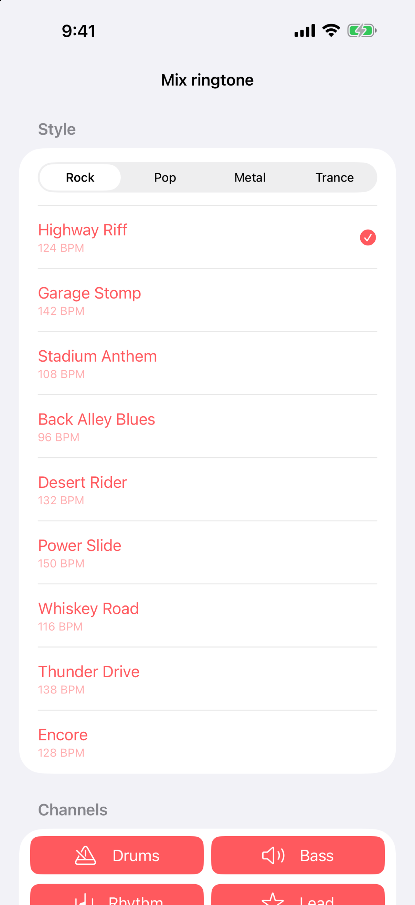

cring
יוצרים רינגטון שנשמע כמו מי שמתקשר.



- 36 לולאות רוק, פופ, מטאל וטראנס, בנויות מארבעה ערוצים (תופים, בס, קצב ומנגינה) שמדליקים וכבים.
- או מקלידים משפט והוא נאמר בקול גבר או אישה, עם אפקט רדיו, אווירה או רובוטי.
- או משלבים: לולאת מוזיקה עם המשפט שלכם מעליה; המוזיקה שקטה בזמן הדיבור.
- שומרים ומשתפים את הרינגטונים, והמדריך המובנה מראה איך לשייך אחד לאיש קשר.
שאלות ותשובות
איך יוצרים רינגטון שנשמע כמו מי שמתקשר?
ב-cring בונים רינגטון מלולאות רוק, פופ, מטאל או טראנס, או מקלידים משפט שיוקרא בקול, ונותנים לכל איש קשר צליל משלו.
אפשר להפוך משפט לרינגטון?
כן. מקלידים משפט, בוחרים קול גבר או אישה ומוסיפים אפקט רדיו, אווירה או רובוטי להתחלה, לאמצע או לסוף.
מה זה רינגטון משולב?
לולאת מוזיקה עם המשפט שלכם מעליה. המוזיקה שקטה בזמן הדיבור.
איך משייכים רינגטון לאיש קשר?
ב-cring יש מדריך מובנה שמראה איך לשייך את הרינגטון לאיש קשר.